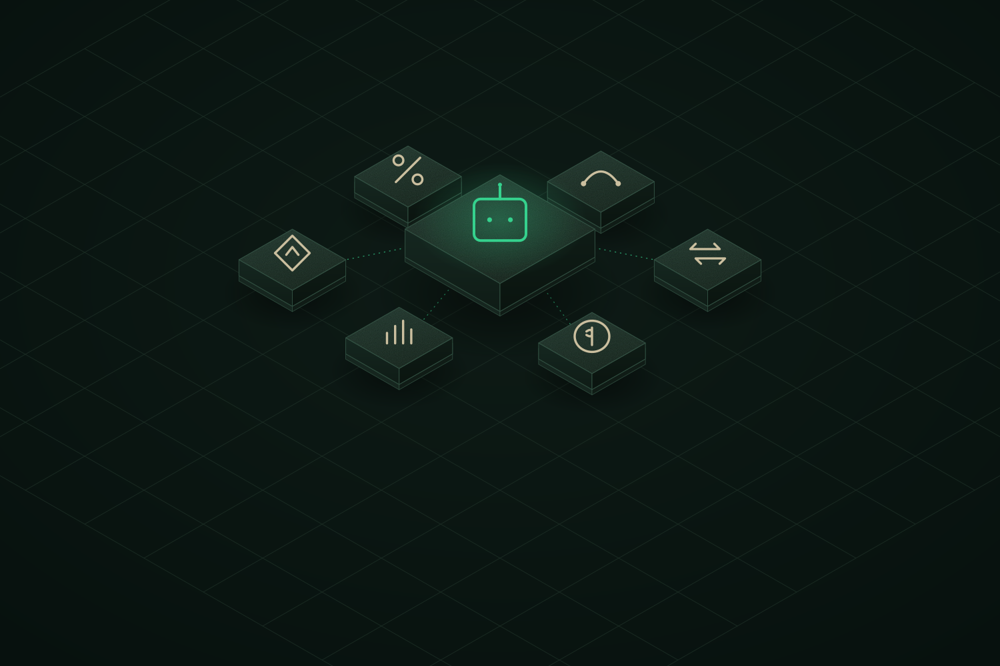
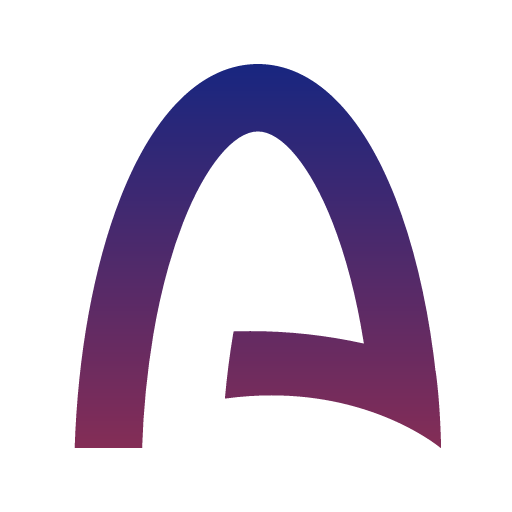
Arc Builders FundTrade, earn, borrow, bridge and launch — in plain language, through one AI agent. Non-custodial. Audited. Native to Arc.
The next wave of onchain finance won't be clicked through twenty tabs — it will be delegated to agents. Kaleido is the coordination layer: one AI agent orchestrating every core DeFi primitive across one non-custodial surface. We built it on Arc, where stablecoin gas and sub-second finality make agent-driven finance genuinely usable for the first time.
A user says it in plain language. Luca parses the intent, builds a transaction plan, runs it through a fail-closed auditor, and hands it back to sign. Trade, bridge, lend, stake, set limits, snipe launches — or paste a contract for an instant buy/sell card. Luca never holds funds: it plans, protects, and executes only what the user approves.
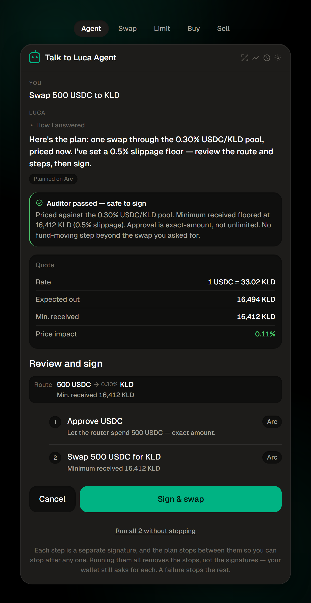
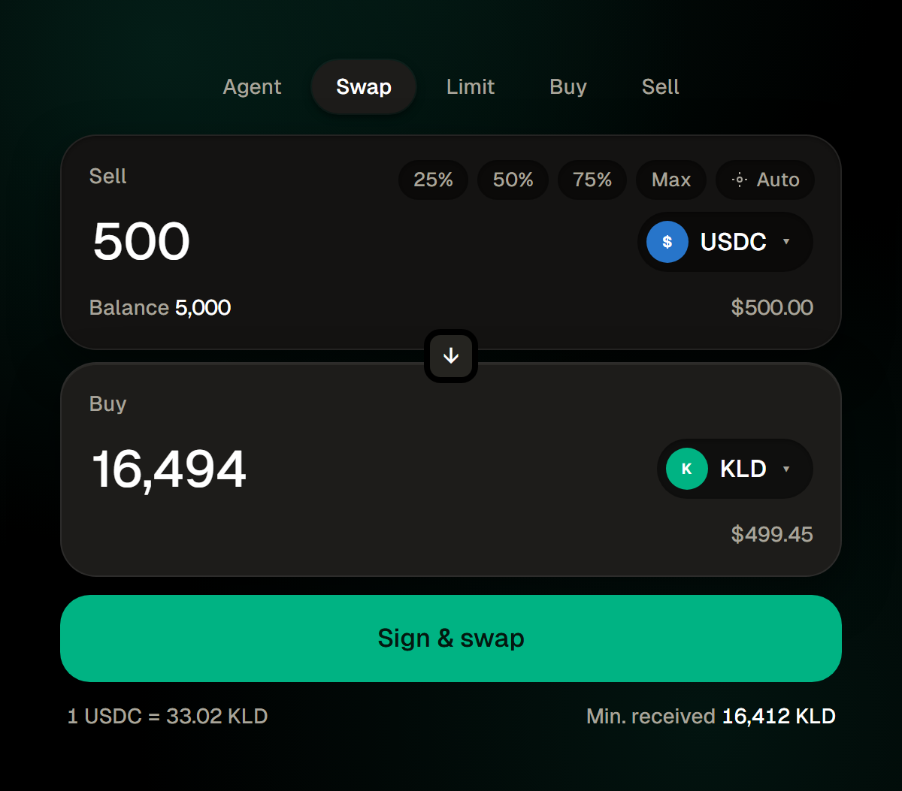
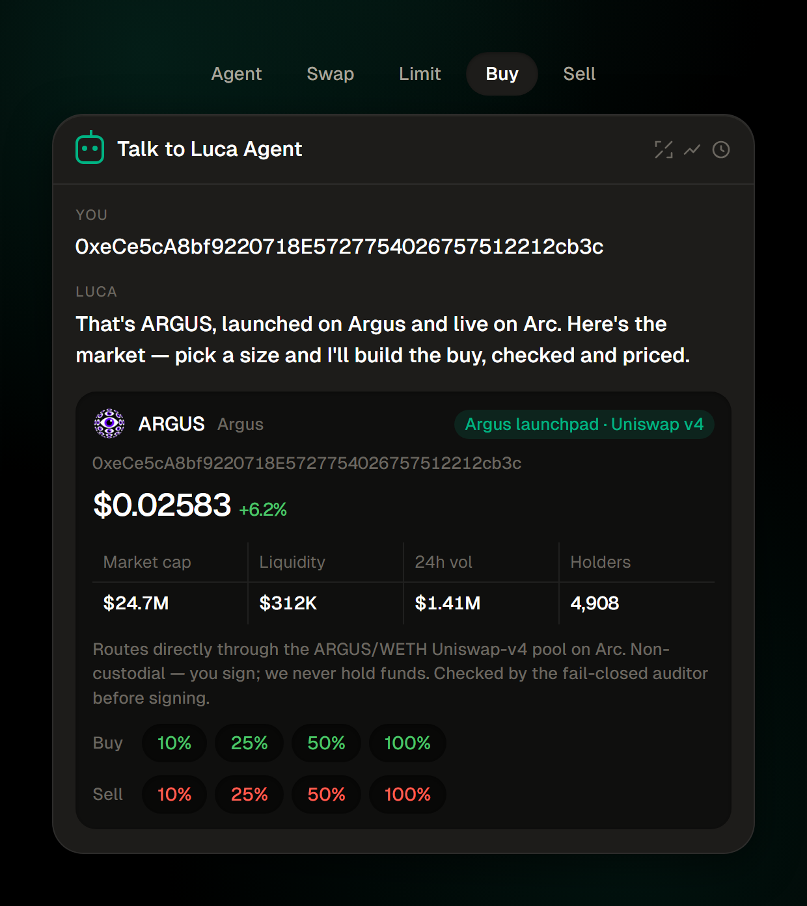
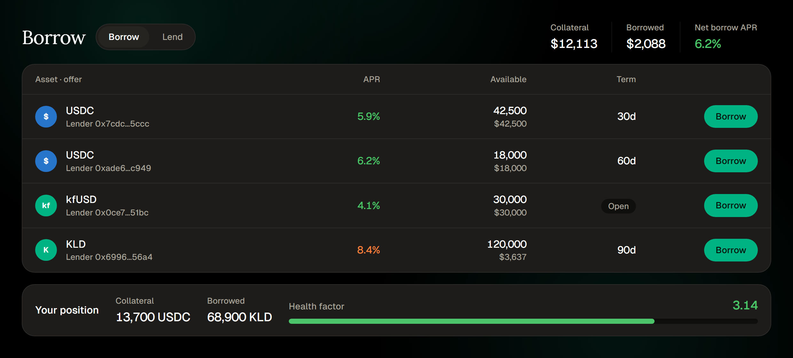
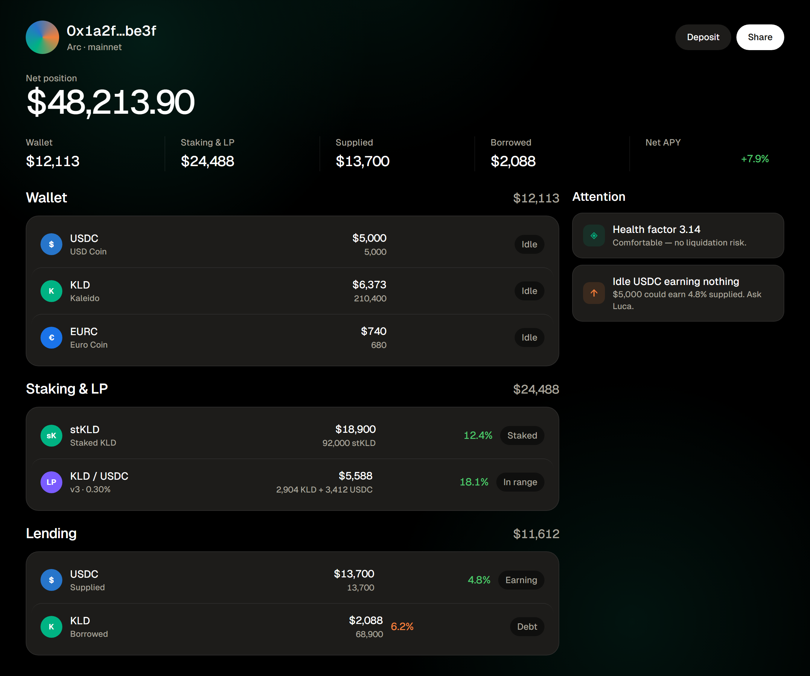
kfUSD is minted permissionlessly against collateral — over-collateralized and redeemable through the protocol. kafUSD is the yield-bearing version: hold it and protocol revenue accrues to your balance, with nothing locked up. Mint, redeem and earn straight from Luca or the Stable tab.
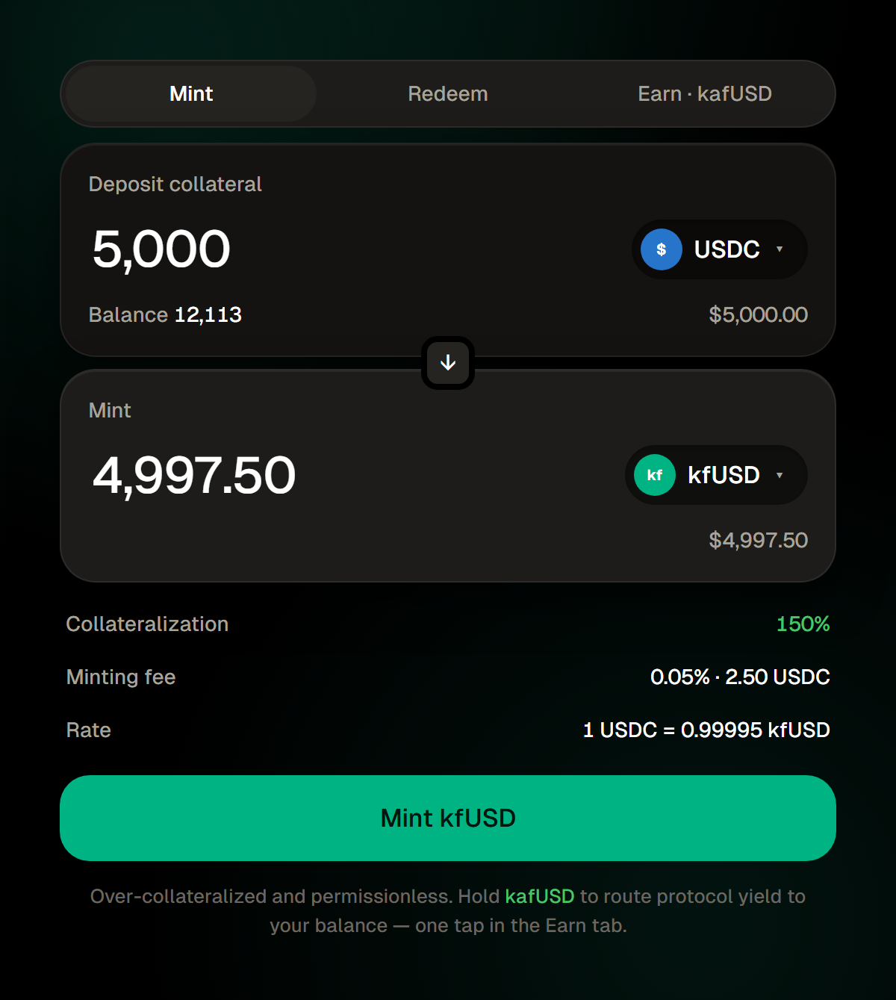
Stake $KLD and receive stKLD — a liquid receipt that accrues a share of protocol revenue as its exchange rate climbs. No lockup beyond a short unstake cooldown, and stKLD stays usable across Kaleido while it earns.
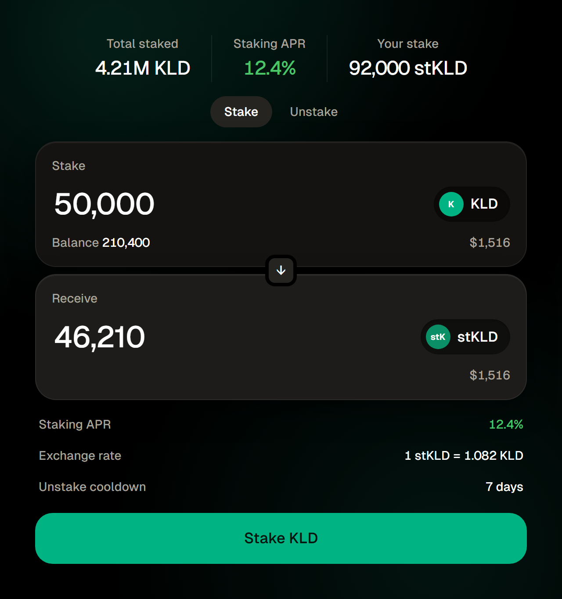
Kaleido bridges into and out of Arc through Circle's CCTP — burning and minting native USDC 1:1 — with LI.FI routing for everything else. One step inside Luca: the agent picks the corridor, the user signs once, and the funds arrive as canonical USDC. No gas needed on the destination — the completion keeper finishes the mint.
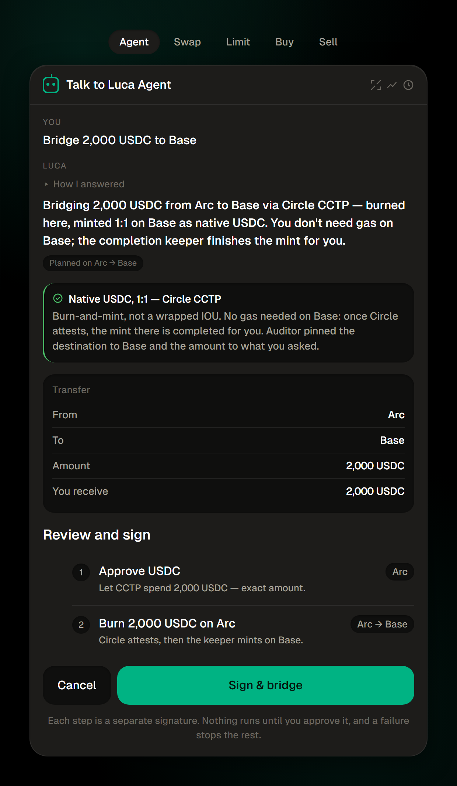
Every product reports to a public, real-time analytics dashboard and an onchain points leaderboard — anyone can verify usage as it happens.
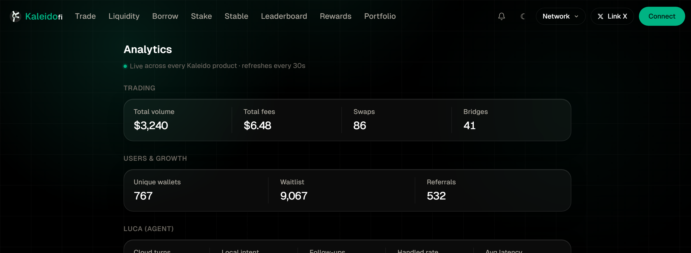
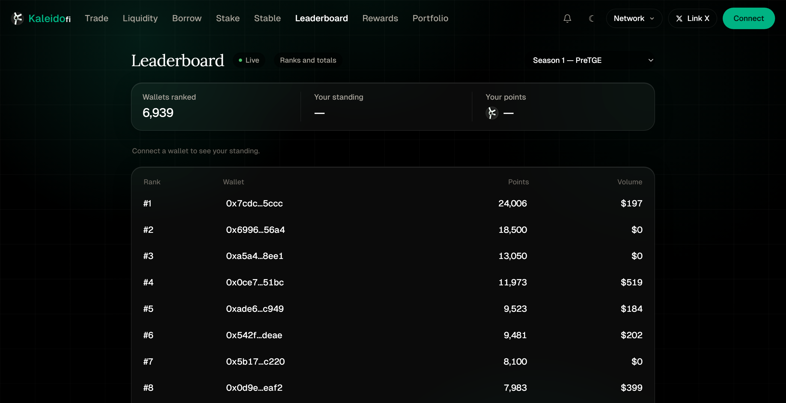
Every stream scales with agent-driven volume — the more Luca does for users, the more the protocol earns. Premium agent tiers extend this over time.
$KLD is the ecosystem's utility and staking token — stake for stKLD and a share of protocol revenue. A live Season 1 points program already rewards real usage across trading, liquidity and tasks, and converts into the token allocation at TGE. Rewards are earned onchain, not farmed — every point traces to a real action.
Beyond launch: deeper agent autonomy, institutional features, and Kaleido as the default agentic-finance layer wherever Circle's rails go.
Kaleido is the agentic-finance layer Arc needs — already live, already shipping. With the Builders Fund's capital and hands-on support from Arc's core teams, we accelerate the agent, deepen liquidity, and bring institutional users onto Arc's rails.